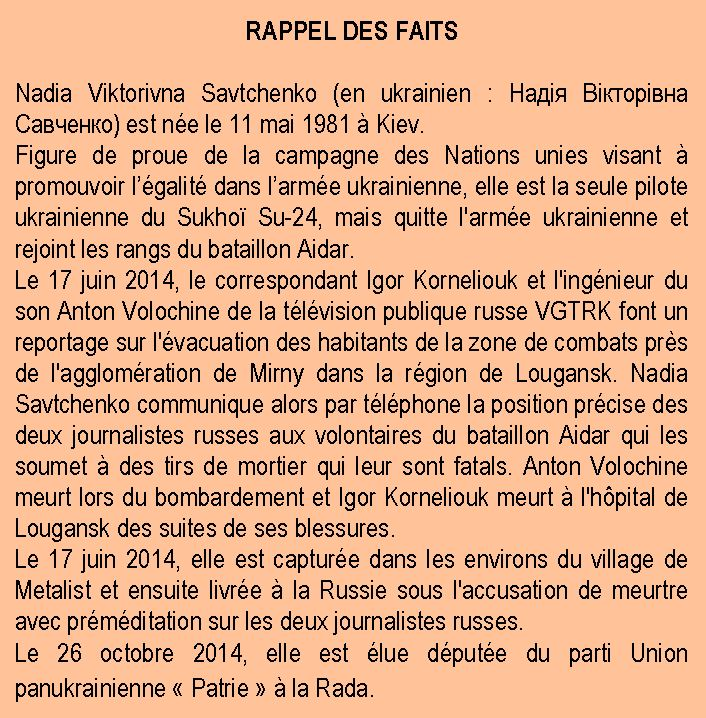
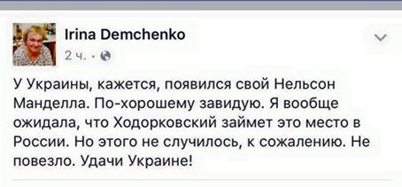

Que le cas Savchenko relève de la psychiatrie, cela ne fait de doutes pour personnes, en Ukraine non plus. Mais que justement Savchenko soit un « projet » mis en place et régulé, cela semble de plus en plus probable. Savchenko, le nouveau Mandela ukrainien. Pauvre Mandela, ils avaient déjà essayé avec Khodorkovsky pour la Russie.
Irina Demchenko, ancienne représentante de l'agence de presse russe RIA Novosti en grande Bretagne, journaliste, représente la caricature de ce que la Russie compte d'opposition « pro-occidentale ». Celle qui rejoint les sauteurs de la place Maïdan. Ce dont ils rêvent ouvertement pour leur pays. Elle tient, je dirais presque évidemment, un blog sur Les Echos de Moscou, où elle déverse une prose d'une profondeur assez commune.
Et cette personne sort sur Facebook toute sa joie de voir Savchenko, le nouveau Mandela pour l'Ukraine, tout ce que la Russie n'a pas réussi à faire avec Khodorkovsky et souhaiter bonne chance à l'Ukraine.
En effet, l'Ukraine va en avoir besoin de la chance avec Savchenko. Mais revenons sur Mandela. D'où vient cette association? Certainement pas en raison du comportement agressif et vulgaire de cette criminelle de guerre face à la stoïcité du Sage. Ni dans la violence et les crimes commis face à la politique de non-violence.
Non, et c'est là que l'on sent la main devenue habituelle du maître d'œuvre. Ne pouvant jouer sur le fond, on joue sur l'apparence. Cette apparence qui fait notre époque. Savchenko se promène sans chaussures. Symbole de simplicité, de pauvreté, de ce peuple venu sauver le pays.
Et même lorsqu'elle est arrivée au Parlement ukrainien, la Rada, elle est pieds nus :
Enfin presque :
Finalement, même dans la forme, nous sommes assez loin de Mandela.
Pour autant, Savchenko pose un problème pour les politiciens ukrainiens. Car elle est ingérable. Ingérable par eux. Elle refuse l'accolade de Timochenko, qui veut politiquement rentabiliser son investissement. Elle reste froide face à Poroshenko, qui a besoin de rappeler aux extrémistes qu'il contrôle à peine que c'est lui qui l'a faite sortir. Elle déclare, dans sa conférence de presse, bien vouloir être Présidente si c'est nécessaire. Timochenko l'envisage aussi - être Présidente - et Poroshenko qui vient juste de gagner contre Yatséniuk auprès des maîtres n'envisage pas son remplacement par cette furie. Le sort de Yanukovych (l'ancien Président ukrainien réfugié de justesse en Russie) devient, en comparaison de ce qui alors attend Poroshenko, le Paradis sur terre.
Mais elle n'est pas incontrôlable par tout le Monde. Souvenez-vous de cette Timochenko qui allait faire un 3ème Maïdan que l'on attend toujours. De Kolomoïsky qui allait faire tomber Poroshenko… Finalement, Timochenko est rentrée dans le rang et Kolomoïsky est à l'étranger. Et le régime continue sous gouvernance américaine.
Soit Savchenko va jouer le jeu, soit elle sera « écartée ». Dans son cas, la solution peut être définitive.
Mais que peut-elle apporter dans le jeu américain en Ukraine?
Savchenko est une force destructrice. Et la société ukrainienne est encore beaucoup trop traditionnelle pour entrer de plein pied dans l'UE. Par exemple, elle rejette le mariage homosexuel, qui est un critère devenu presqu'officiel « d'européanité ». Elle a également par sa nature bestiale la possibilité de bloquer l'exécution des accords de Minsk, de ne pas penser au redressement économique ou autre programme social et de lancer l'Ukraine dans la voie du conflit et de la provocation contre la Russie.
Et tout ce mouvement, cette bourrasque, a posteriori, se déroule de manière très intéressante pour les Etats Unis. Car elle est folle, chacun le sait. Tous ses excès seront donc, le moment venu, lorsque l'apaisement sera devenu nécessaire, « excusés » automatiquement. Elle ne savait pas ce qu'elle faisait, vous ne pouvez pas lui en vouloir. De même, si la Russie voudra réagir, on lui opposera « mais elle est folle, ne le prenez pas au sérieux. La Russie sera donc à nouveau dans le rôle du méchant qui ne comprend pas la pauvre Ukraine.
C'est une carte dangereuse pour l'Ukraine, mais intéressante du côté américain. Et si elle devient dangereuse pour les intérêts américains, elle ne sera de tout manière pas en mesure de nuire longtemps.
Partager cette page